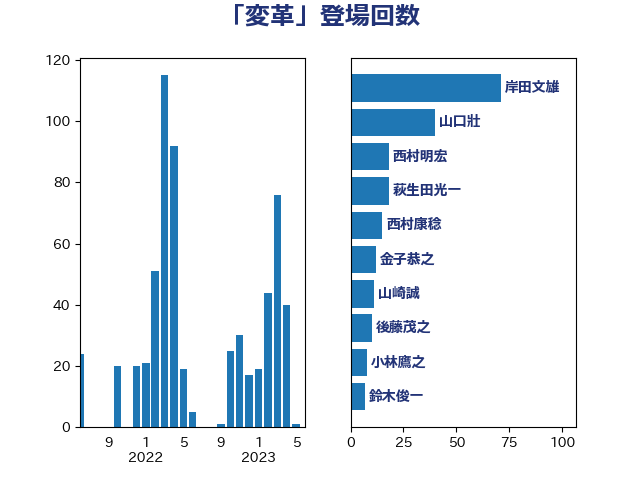

単語「変革」

| 岸田文雄 | 自由民主党 | 71 回 |
| 山口壯 | 自由民主党 | 40 回 |
| 西村明宏 | 自由民主党 | 18 回 |
| 萩生田光一 | 自由民主党 | 18 回 |
| 西村康稔 | 自由民主党 | 15 回 |
| 金子恭之 | 自由民主党 | 12 回 |
| 山崎誠 | 立憲民主党 | 11 回 |
| 後藤茂之 | 自由民主党 | 10 回 |
| 小林鷹之 | 自由民主党 | 8 回 |
| 鈴木俊一 | 自由民主党 | 7 回 |
| 中川康洋 | 公明党 | 6 回 |
| 三浦信祐 | 公明党 | 6 回 |
| 梶山弘志 | 自由民主党 | 5 回 |
| 山岡達丸 | 立憲民主党 | 5 回 |
| 務台俊介 | 自由民主党 | 5 回 |
| 鈴木義弘 | 国民民主党 | 4 回 |
| 若宮健嗣 | 自由民主党 | 4 回 |
| 石井正弘 | 自由民主党 | 4 回 |
| 松本剛明 | 自由民主党 | 4 回 |
| 末松信介 | 自由民主党 | 4 回 |
| 山際大志郎 | 自由民主党 | 4 回 |
| 山口那津男 | 公明党 | 4 回 |
| 宮崎勝 | 公明党 | 4 回 |
| 大岡敏孝 | 自由民主党 | 4 回 |
| 堀場幸子 | 日本維新の会 | 4 回 |
| 伊藤岳 | 日本共産党 | 4 回 |
| 伊藤孝恵 | 国民民主党 | 4 回 |
| 高木かおり | 日本維新の会 | 3 回 |
| 音喜多駿 | 日本維新の会 | 3 回 |
| 進藤金日子 | 自由民主党 | 3 回 |
| 緑川貴士 | 立憲民主党 | 3 回 |
| 甘利明 | 自由民主党 | 3 回 |
| 滝沢求 | 自由民主党 | 3 回 |
| 浜田靖一 | 自由民主党 | 3 回 |
| 梅村みずほ | 日本維新の会 | 3 回 |
| 新妻秀規 | 公明党 | 3 回 |
| 斉藤鉄夫 | 公明党 | 3 回 |
| 平林晃 | 公明党 | 3 回 |
| 岸真紀子 | 立憲民主党 | 3 回 |
| 尾身朝子 | 自由民主党 | 3 回 |
| 守島正 | 日本維新の会 | 3 回 |
| 嘉田由紀子 | 無所属 | 3 回 |
| 住吉寛紀 | 日本維新の会 | 3 回 |
| 上野通子 | 自由民主党 | 3 回 |
| 三木圭恵 | 日本維新の会 | 3 回 |
| 高市早苗 | 自由民主党 | 2 回 |
| 馬場雄基 | 立憲民主党 | 2 回 |
| 青木愛 | 立憲民主党 | 2 回 |
| 阿部司 | 日本維新の会 | 2 回 |
| 西岡秀子 | 国民民主党 | 2 回 |
| 茂木敏充 | 自由民主党 | 2 回 |
| 笹川博義 | 自由民主党 | 2 回 |
| 窪田哲也 | 公明党 | 2 回 |
| 石井啓一 | 公明党 | 2 回 |
| 田中健 | 国民民主党 | 2 回 |
| 猪瀬直樹 | 日本維新の会 | 2 回 |
| 牧島かれん | 自由民主党 | 2 回 |
| 牧山ひろえ | 立憲民主党 | 2 回 |
| 河西宏一 | 公明党 | 2 回 |
| 沢田良 | 日本維新の会 | 2 回 |
| 池田佳隆 | 自由民主党 | 2 回 |
| 柘植芳文 | 自由民主党 | 2 回 |
| 松下新平 | 自由民主党 | 2 回 |
| 杉田水脈 | 自由民主党 | 2 回 |
| 朝日健太郎 | 自由民主党 | 2 回 |
| 平山佐知子 | 無所属 | 2 回 |
| 山本順三 | 自由民主党 | 2 回 |
| 寺田稔 | 自由民主党 | 2 回 |
| 太田房江 | 自由民主党 | 2 回 |
| 大野敬太郎 | 自由民主党 | 2 回 |
| 大塚耕平 | 国民民主党 | 2 回 |
| 古川禎久 | 自由民主党 | 2 回 |
| 加藤勝信 | 自由民主党 | 2 回 |
| 前原誠司 | 国民民主党 | 2 回 |
| 中西祐介 | 自由民主党 | 2 回 |
| 中川正春 | 立憲民主党 | 2 回 |
| 中川宏昌 | 公明党 | 2 回 |
| 中島克仁 | 立憲民主党 | 2 回 |
| 一谷勇一郎 | 日本維新の会 | 2 回 |
| 高見康裕 | 自由民主党 | 1 回 |
| 青柳仁士 | 日本維新の会 | 1 回 |
| 阿部知子 | 立憲民主党 | 1 回 |
| 長浜博行 | 無所属 | 1 回 |
| 鈴木貴子 | 自由民主党 | 1 回 |
| 鈴木庸介 | 立憲民主党 | 1 回 |
| 野村哲郎 | 自由民主党 | 1 回 |
| 野上浩太郎 | 自由民主党 | 1 回 |
| 里見隆治 | 公明党 | 1 回 |
| 輿水恵一 | 公明党 | 1 回 |
| 越智隆雄 | 自由民主党 | 1 回 |
| 赤羽一嘉 | 公明党 | 1 回 |
| 谷公一 | 自由民主党 | 1 回 |
| 角田秀穂 | 公明党 | 1 回 |
| 西銘恒三郎 | 自由民主党 | 1 回 |
| 藤井比早之 | 自由民主党 | 1 回 |
| 藤井一博 | 自由民主党 | 1 回 |
| 荒井優 | 立憲民主党 | 1 回 |
| 若松謙維 | 公明党 | 1 回 |
| 舞立昇治 | 自由民主党 | 1 回 |
| 羽田次郎 | 立憲民主党 | 1 回 |
| 紙智子 | 日本共産党 | 1 回 |
| 竹詰仁 | 国民民主党 | 1 回 |
| 竹内真二 | 公明党 | 1 回 |
| 福重隆浩 | 公明党 | 1 回 |
| 福田昭夫 | 立憲民主党 | 1 回 |
| 石川博崇 | 公明党 | 1 回 |
| 石原宏高 | 自由民主党 | 1 回 |
| 石井拓 | 自由民主党 | 1 回 |
| 田畑裕明 | 自由民主党 | 1 回 |
| 田村貴昭 | 日本共産党 | 1 回 |
| 田村智子 | 日本共産党 | 1 回 |
| 片山大介 | 日本維新の会 | 1 回 |
| 片山さつき | 自由民主党 | 1 回 |
| 漆間譲司 | 日本維新の会 | 1 回 |
| 湯原俊二 | 立憲民主党 | 1 回 |
| 渡辺猛之 | 自由民主党 | 1 回 |
| 浜野喜史 | 国民民主党 | 1 回 |
| 浅田均 | 日本維新の会 | 1 回 |
| 池畑浩太朗 | 日本維新の会 | 1 回 |
| 池下卓 | 日本維新の会 | 1 回 |
| 櫛渕万里 | れいわ新選組 | 1 回 |
| 森本真治 | 立憲民主党 | 1 回 |
| 森屋宏 | 自由民主党 | 1 回 |
| 柴田巧 | 日本維新の会 | 1 回 |
| 柴愼一 | 立憲民主党 | 1 回 |
| 柴山昌彦 | 自由民主党 | 1 回 |
| 松野博一 | 自由民主党 | 1 回 |
| 松山政司 | 自由民主党 | 1 回 |
| 松原仁 | 立憲民主党 | 1 回 |
| 東徹 | 日本維新の会 | 1 回 |
| 本庄知史 | 立憲民主党 | 1 回 |
| 木村次郎 | 自由民主党 | 1 回 |
| 有村治子 | 自由民主党 | 1 回 |
| 日下正喜 | 公明党 | 1 回 |
| 新藤義孝 | 自由民主党 | 1 回 |
| 平木大作 | 公明党 | 1 回 |
| 市村浩一郎 | 日本維新の会 | 1 回 |
| 川合孝典 | 国民民主党 | 1 回 |
| 岩谷良平 | 日本維新の会 | 1 回 |
| 岩田和親 | 自由民主党 | 1 回 |
| 岩渕友 | 日本共産党 | 1 回 |
| 山本左近 | 自由民主党 | 1 回 |
| 山崎正恭 | 公明党 | 1 回 |
| 山下芳生 | 日本共産党 | 1 回 |
| 小森卓郎 | 自由民主党 | 1 回 |
| 小寺裕雄 | 自由民主党 | 1 回 |
| 寺田静 | 無所属 | 1 回 |
| 宮本岳志 | 日本共産党 | 1 回 |
| 宮口治子 | 立憲民主党 | 1 回 |
| 奥下剛光 | 日本維新の会 | 1 回 |
| 太栄志 | 立憲民主党 | 1 回 |
| 天畠大輔 | れいわ新選組 | 1 回 |
| 大家敏志 | 自由民主党 | 1 回 |
| 塩崎彰久 | 自由民主党 | 1 回 |
| 堤かなめ | 立憲民主党 | 1 回 |
| 堀井巌 | 自由民主党 | 1 回 |
| 国定勇人 | 自由民主党 | 1 回 |
| 和田義明 | 自由民主党 | 1 回 |
| 吉田久美子 | 公明党 | 1 回 |
| 吉川元 | 立憲民主党 | 1 回 |
| 古川直季 | 自由民主党 | 1 回 |
| 北側一雄 | 公明党 | 1 回 |
| 倉林明子 | 日本共産党 | 1 回 |
| 伊藤達也 | 自由民主党 | 1 回 |
| 伊波洋一 | 無所属 | 1 回 |
| 井野俊郎 | 自由民主党 | 1 回 |
| 井坂信彦 | 立憲民主党 | 1 回 |
| 井原巧 | 自由民主党 | 1 回 |
| 五十嵐清 | 自由民主党 | 1 回 |
| 中野洋昌 | 公明党 | 1 回 |
| 中田宏 | 自由民主党 | 1 回 |
| 中司宏 | 日本維新の会 | 1 回 |
| 世耕弘成 | 自由民主党 | 1 回 |
| 上川陽子 | 自由民主党 | 1 回 |